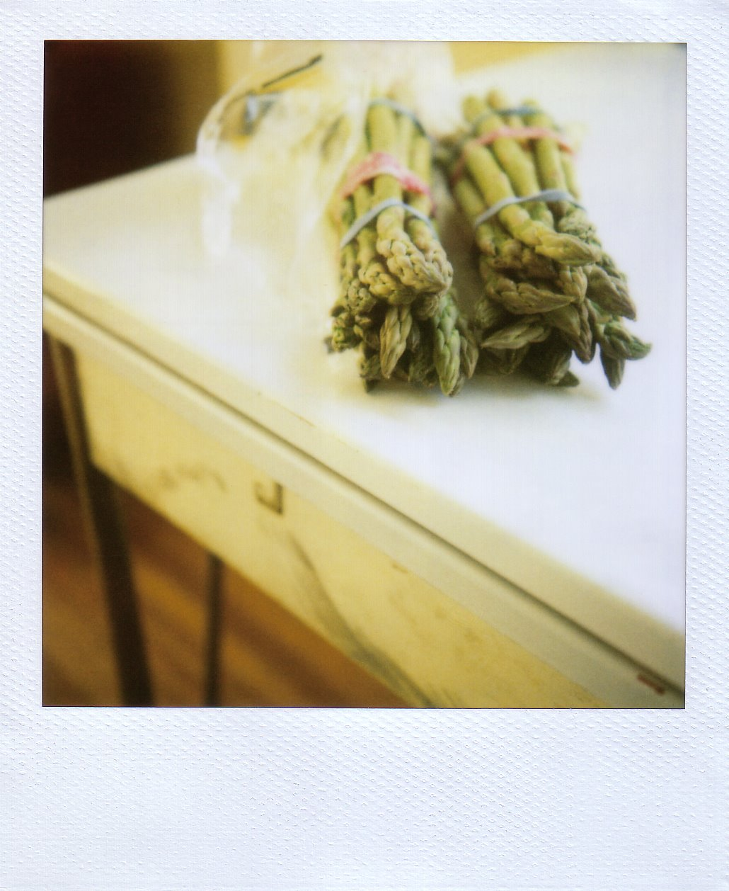

The truth is
I have to tell you something sort of unpleasant today, but somehow, I don’t think you’re going to be surprised: I have not been doing much cooking lately.
I was hoping to be able to avoid the topic, but I can’t. There is a lot going on over here, and you can see it as clearly as I can, so there’s no point in trying to fool anyone. The truth is, for the past week, we’ve been living on a pot of pinto beans spiked with Tapatio, four steamed artichokes, a few pans of scrambled eggs, a quart of ice cream, one bag of Cool Ranch Doritos, and one bag of Blazin’ Buffalo & Ranch Doritos. I am not too proud to admit it. I am also not too proud to blame Delancey. In fact, I totally blame Delancey, with all my heart. Yesterday, I managed to roast some parsnips for lunch, and I felt so pleased with myself, so absolutely elated,
as though I’d suddenly discovered that my oven door opened directly into Narnia. It was really something.
Not as great a something, though, as the roasted asparagus with walnut crema that I made for dinner a few hours later. The oven and I were on a roll.
I found the recipe in A16: Food + Wine, by Nate Appleman and Shelley Lindgren, executive chef and wine director, respectively, of the restaurant A16. I’ve wanted to go to A16 for a long time now, but somehow, whenever I’m in San Francisco, I wind up so distracted by every option on every street corner that I completely forget what I went there for. I think sensory overstimulation is a requirement for any proper visit to the Bay Area, so I don’t fight it too hard, though it means, sadly, that I have never been to A16. Luckily, the book makes a happy stopgap. It’s visually stunning – clean but warm, with lots of luminous photographs on sturdy matte paper – and the recipes walk a fine, perfect line between simple and complex, rustic food and restaurant food. It’s the kind of cookbook I feel inclined to keep on the nightstand, so that I can read it in bed. Just this past weekend, it won Book of the Year in the 2009 IACP Cookbook Awards, so if you need a really firm, serious endorsement, there you go. It also contains the most inspired asparagus recipe I’ve run across in ages, which is why I’m rattling on and on like this.
{kind=link}

It was 70 degrees in Seattle yesterday, unreal for April 6, and I decided to mark the occasion by driving with the windows down and buying some asparagus. The A16 book was lying on the coffee table in the living room, and at some point in the afternoon, I picked it up to put it somewhere else, and when I did, it fell open to page 102, the recipe for Roasted Asparagus with Walnut Crema and Pecorino Tartufo. I took it as a sign. From Narnia.
{kind=link}
The recipe title sounds fancy, and the finished dish tastes fancy, too, but in essence, it’s very straightforward. First, you make the walnut crema. You bring some water to a boil, toss in some walnuts, and cook them until they’re tender to the tooth. While this is going on, you sweat some red onion in a skillet. Then you dump both items into the food processor with some of the walnut-blanching water, blend it all up, and then pour in olive oil while you blend it some more. The resulting mixture, now worthy of the handsome word crema, looks a little like hummus, but it tastes somehow more like a distant cousin of pesto: fragrant, rich, and deeply savory. You spoon it onto a platter, top it with roasted asparagus, shave some ribbons of pecorino over the whole thing, and splash it with olive oil. The pecorino melts against the hot asparagus, and it’s salty and tangy, and the walnut crema sort of slithers beneath it all, subtle but beguiling. We scraped our plates, and then we had it again for lunch today.
Roasted Asparagus with Walnut Crema and Pecorino
Adapted from A16: Food + Wine
The original version of this recipe calls for Pecorino Tartufo, a sheep’s milk cheese with black truffle, but barring that, any aged pecorino works nicely. I used Pecorino Romano. The original recipe also calls for finishing the dish with some toasted walnuts, but I skipped that part. The walnut crema carried plenty of nut flavor for me, and I thought that anything more was overkill. Maybe I’m weird. Either way, I finished mine with a squeeze of lemon, and it was a nice counterbalance to the richness of the crema.
This recipe is intended to serve six, and even if you don’t need to feed that many, I would go ahead and make the full amount of crema. It will keep in the fridge for a few days, and you can roast the asparagus as needed. (One bunch is perfect for two people.) Also, Brandon has a hunch that leftover crema would make a terrific sauce for pasta, tossed with fresh garlic, lemon, and a little Italian parsley.
For walnut crema:
For asparagus:
To make the walnut crema, bring a pot of salted water to a boil. Add the walnuts, and blanch for 8 to 10 minutes, or until tender in the middle. (I pulled mine out after 8 minutes, thinking that they seemed tender enough, but I should have left them for the full 10 minutes. My finished crema was slightly grainy, probably meaning that my walnuts weren’t soft enough.) Drain the walnuts, reserving ¼ cup of the cooking water. Set aside separately.
In a small skillet, warm 1 Tbsp. olive oil over medium heat. Add the onion and a generous pinch of salt, and sweat for about 7 minutes, or until golden brown and softened. Remove from the heat.
In the bowl of a food processor, combine the walnuts, the reserved cooking water, and the onion, and process until creamy. Taste for seasoning: it will probably need a decent amount of salt. With the motor running, slowly add ½ cup olive oil, processing until blended. The crema should have the consistency of a creamy hummus. If it seems too thick, add a little water. Taste again for seasoning, and then transfer to a bowl or other container. Cover, and hold at room temperature. (Crema can be stored, tightly covered, in the refrigerator for a few days. Bring to room temperature before serving.)
Preheat the oven to 500°F. Line two baking sheets with aluminum foil.
Snap the tough ends from the asparagus spears. Rinse them, and then dry them well. Spread them in a single layer on the prepared baking sheets. Drizzle them lightly with olive oil, and roll them around, smearing the oil with your hands, to coat evenly. Season with kosher salt. Bake for about 8 minutes, shaking the pan once or twice, until blistered, slightly charred, and tender.
To serve, spoon the crema evenly across the bottom of a platter. Arrange the asparagus spears on top. Working quickly, while the asparagus is still hot, shave Pecorino generously over the platter. Finish with a drizzle of olive oil, and serve immediately, with a squeeze of lemon, if you like.
Yield: 6 (first-course) servings